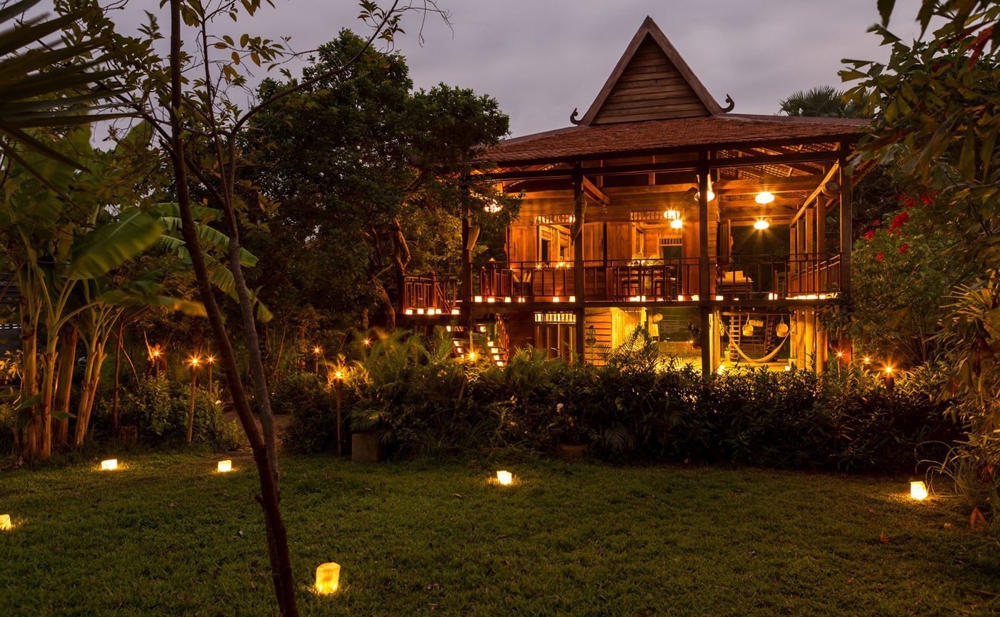

Amansara has been shut since 15 June. It opens again on 15 September, with pools behind five more walls and a bar in the room where a king once ate dinner.
The room is small. Between 1962 and 1965 it was where King Norodom Sihanouk and his family dined when they stayed at Villa Princière, the modernist guesthouse Laurent Mondet built for him on the road out to the temples. It was never a public space. The state hotel company took the villa over in the mid-sixties, the war emptied it, and Aman rebuilt it from photographs and opened it in January 2003. The dining room stayed a dining room, more or less, for another two decades.
From next week it pours drinks. Aman calls it a destination bar, which in its vocabulary means somewhere non-residents are expected to turn up. Amansara had nowhere quite like it before. Drinks were taken on the rooftop terrace among the treetops, or on one of the two terraces off the rotunda, or in the lounge with the cheese cellar. A proper bar with a proper room, and that particular room, changes the evening.
Eighteen pools
The suites were the other half of the summer's work. Amansara went into the closure with 24 of them, 13 with private plunge pools and 11 without. Five of the eleven have been given pools, which brings the count to eighteen and leaves six courtyards dry. Two categories are new: a Junior Pool Suite and a Two-Bedroom Family Pool Suite, the first time the property has offered a two-bedroom key. Interiors across the board have been refreshed. The last round, in autumn 2023, added daybeds to the courtyards and replaced the showers and the lighting controls; this one moved earth.
The plan of a suite has not changed, and there was no reason it should. Bedroom and sitting room share one long space, which steps down into a bathroom with a freestanding tub at its centre. Glass runs floor to ceiling on the courtyard side and slides away entirely. Outside are a reflecting pond, sun loungers, a daybed, and now, in most of them, a pool. Sandstone reliefs on the walls borrow from the carvings a few minutes up the road.

The Khmer Village House, Amansara’s stilted pavilion inside the Angkor park, lit for dinner · Courtesy of Aman
The spa path
Aman has said the wellness facilities have been expanded without saying how far. What was there before is worth setting down. The spa sits beside a reflecting pond at the end of a path that runs along a 43-metre bas relief carved in the Angkor manner. Four treatment rooms, each with its own steam bath. A 25-metre lap pool hidden behind the main one, and a movement studio added in 2019. Monks from the temples lead walking meditations through the forest, and a water blessing at a village pagoda can be arranged for anyone willing to be soaked.
Dinner still has three addresses. The rotunda at the centre of the villa, with its copper dome and its two terraces. The Khmer Village House, a stilted timber house in a garden inside the Angkor park itself, looking over Srah Srang, the royal reservoir dug in the tenth century, where breakfast follows a dawn at the temples and dinner is cooked over charcoal. And Prasat Kravan, a brick temple of the same century, which the hotel lights with a thousand candles for a Cambodian feast on request.
Sixty-three years after the king last sat down in that room, someone will lean on the bar and order a drink.
The Splendid EditWhat the rate buys
Amansara runs closer to a house than a hotel, and the rate is built that way. A stay includes breakfast, a second meal each day with soft drinks, afternoon tea, laundry, a car around town, and a guided excursion into the Angkor park every day, in the hotel's own vehicles, with an English-speaking guide. The temple pass is extra. Stays of three nights or more add airport transfers with someone meeting the plane to walk guests through immigration. Siem Reap Angkor International is an hour away by road; Angkor Wat is five kilometres in the other direction.
Two journeys have been put together for the reopening. Spirit of Angkor begins with a private morning among the temples, returns to the villa for afternoon tea, then goes out by boat onto the Tonlé Sap as the light drops over the stilted villages. Family Adventure is four nights at half board, with bicycles to the jungle temples, jeeps into the countryside, private tours of Angkor Wat, Ta Prohm and the Bayon, and a breakfast and cooking class at the village house.
Mid-September is the wet season's last stretch. The moats around Angkor Wat are full, the laterite is dark with rain, and the coaches are few. It is the week the villa chose to come back, and the first week anyone will drink in the king's dining room.
Reopening date, new suite categories, pool additions and the bar as announced in Aman’s autumn 2026 programme (reported by Now Travel Asia, 26 August 2026). Closure dates as listed by Mr & Mrs Smith. Suite plans, inclusions, dining, spa and history from aman.com. The 2023 refurbishment details as reported by Luxury Travel Advisor.
Photography courtesy of Aman — © Aman, Amansara